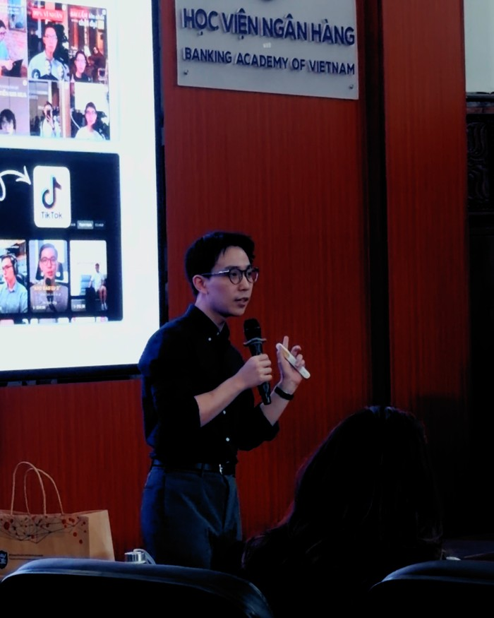
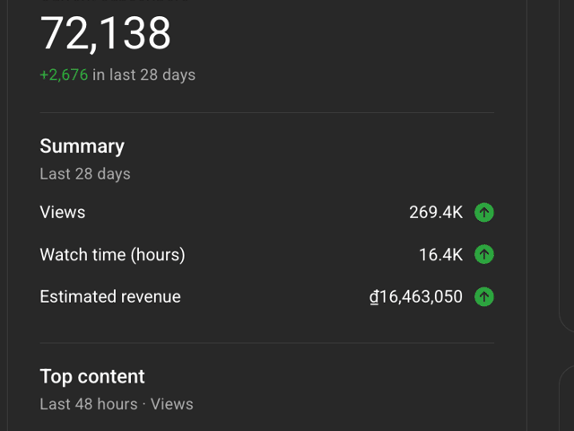
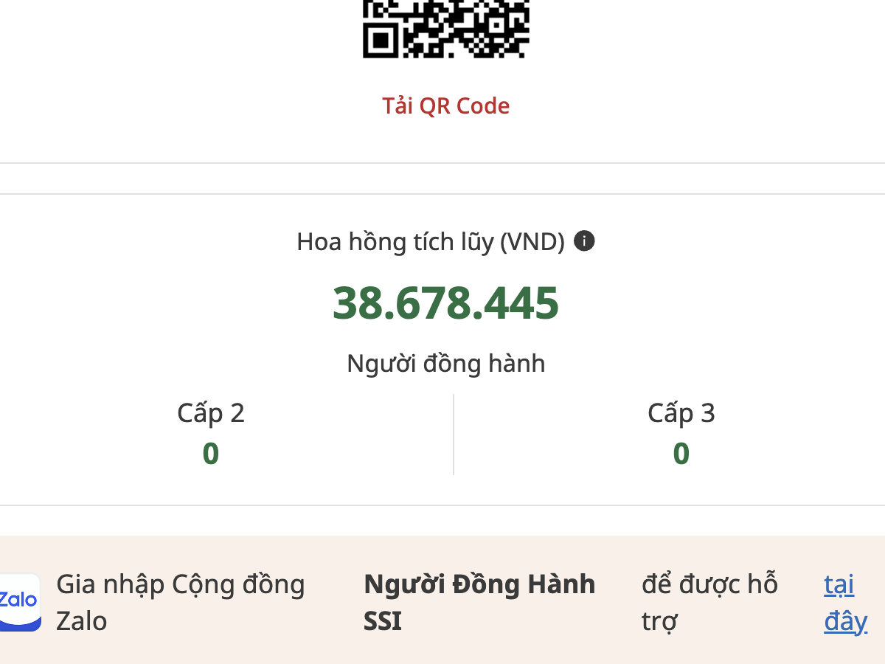
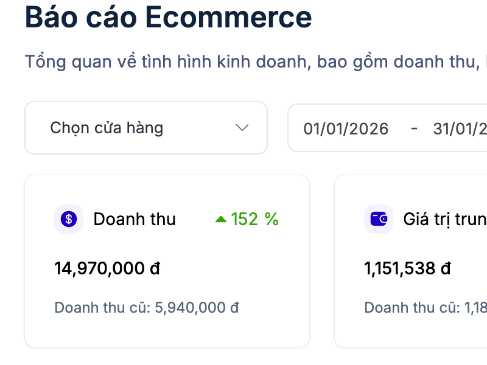

Coaching 1 kèm nhóm nhỏ · Nam Anh
Xây một Kênh Tay Trái cho bạn
thu nhập thụ động 20tr+/tháng
Kênh Tay Trái là lộ trình giúp bạn biến thương hiệu cá nhân thành một nguồn thu tối thiểu 20 triệu mỗi tháng. Bạn có các quy trình từng bước cụ thể để đi, có mình và team kèm sát để không bỏ dở, và được hỗ trợ mỗi khi gặp vướng mắc.

Con số là kết quả thực tế của Nam Anh, không phải cam kết thu nhập.
Một sự thật khó chịu
Một nguồn thu từng là đủ.
Bây giờ thì không còn vậy.
Một công việc. Một mức lương. Ba bốn chục năm gắn bó với một công ty — thế hệ trước chỉ cần vậy là đủ nuôi cả nhà, mua nhà và sắm xe.
Thế hệ mình thì khác. Giá cả tăng nhanh — ngày càng nhiều người trẻ phải xây thêm một, hai, thậm chí ba nguồn thu nữa mới đủ sống và có dư ra để tiết kiệm, đầu tư.
Đó là lý do Kênh Tay Trái ra đời — một lộ trình giúp bạn biến thương hiệu cá nhân thành nguồn thu thứ hai bền vững, dựa trên chính chuyên môn và sở thích bạn đang có. Bạn sẽ không cần:
- Bằng cấp hay chứng chỉ về truyền thông, sáng tạo nội dung
- Nghỉ việc — 5 đến 10 tiếng mỗi tuần là đủ, làm ngoài giờ hành chính
- Nhiều năm mò mẫm — quy trình từng bước rút ngắn còn ba tháng
Thứ duy nhất bạn cần là một hệ thống đúng, có người hỗ trợ, và quyết tâm phát triển trong ba tháng.
Thương hiệu cá nhân có thể thay đổi cuộc đời bạn — nó đã thay đổi cuộc đời mình.

Nếu chúng ta chưa gặp nhau — xin chào, mình là Nam Anh.
Mình bắt đầu xây thương hiệu cá nhân từ năm 2021, ngay sau khi nhận học bổng thạc sĩ toàn phần của chính phủ Hà Lan.
Lúc đó mình nghĩ đây cũng chỉ là một sở thích, nơi mình chia sẻ vài mẹo tìm trường, cách xin học bổng, và những thói quen làm việc, học tập năng suất của bản thân.
Mình bắt đầu từ 0 lượt xem, 0 người theo dõi, và 0 đồng doanh thu.
Vậy mà hai năm sau, mình đã có hơn 200K người theo dõi trên tất cả các nền tảng, có cơ hội hợp tác với những thương hiệu lớn như MoMo, Samsung, VietinBank, MB Bank, Techcombank, Xiaomi, và quan trọng là một nguồn thu nhập thứ hai ổn định.
Hai năm sau, mình sở hữu 200K+ người theo dõi, một thu nhập thứ hai giờ đã vượt xa mức lương cơ bản của mình.
Thu nhập từ thương hiệu cá nhân của mình có tháng khá cao, có tháng khá thấp, tùy vào các dự án hợp tác mình nhận được trong tháng đó. Nhưng ngay cả ở tháng thấp điểm nhất, phần thu nhập thụ động vẫn luôn cao hơn mức lương giảng viên đại học của mình.
Số liệu tháng 1/2026Đây là thu nhập thụ động của mình vào tháng 1/2026, một tháng khá ổn định:



Điều quan trọng hơn cả tiền, thương hiệu cá nhân còn mang lại cho mình các cơ hội hợp tác, mở rộng quan hệ, và giúp mình được biết đến nhiều hơn trong chính công việc giảng viên — qua các hội thảo và vai trò diễn giả.
Thay đổi cuộc sống của bạn ngayĐây là thời điểm tốt nhất để xây một thương hiệu cá nhân.
Xây thương hiệu cá nhân từng tốn rất nhiều tiền bạc, nhân sự, và thời gian. Nhưng giờ đây, chỉ cần đúng kỹ năng và một hệ thống có AI hỗ trợ, một người vẫn có thể phát triển một Kênh Tay Trái với nguồn thu bền vững. So với một công việc làm thêm ngoài giờ, đây là những gì Kênh Tay Trái mang lại cho bạn:
Làm thêm ngoài giờ
- Đổi thêm giờ lấy thêm tiền
- Mỗi lần làm chỉ phục vụ một khách hàng
- Chỉ một nguồn thu — người thuê bạn
- Không ai hướng dẫn, tự làm
- Thu nhập bị giới hạn bởi số giờ bạn có trong ngày
- Chỉ có thêm tiền
Kênh Tay Trái
- Xây một tài sản tự động làm việc khi bạn nghỉ
- Một nội dung có thể tiếp cận hàng nghìn người cùng lúc
- Thu nhập đến từ nhiều nguồn cùng lúc
- Có hệ thống, có bạn đồng hành
- Thương hiệu càng lớn, tiềm năng thu nhập càng lớn theo
- Thêm thu nhập, thêm thương hiệu, thêm cơ hội
Lộ trình
Cách xây thương hiệu cá nhân,
để sớm tự do tài chính.
Ba giai đoạn, ba tháng, một kết quả: một thương hiệu cá nhân tạo ra nguồn thu thứ hai cho bạn. Không sếp, không giờ giấc bó buộc — lịch trình hoàn toàn do bạn quyết định.
Định hình và xây dựng kênh thương hiệu của bạn.
Trong 4 tuần đầu tiên, mình giúp bạn dựng xong nền móng: niche nội dung, lợi thế cá nhân, và hệ thống xây nội dung của riêng bạn. Hết giai đoạn này, kênh của bạn đã có định hướng rõ ràng và sẵn sàng tiếp cận nhãn hàng hoặc khách hàng đầu tiên.
Bạn sẽ cần
- Xác định tệp khán giả và cách nội dung của bạn giúp được gì cho họ
- Hiểu cách lên ý tưởng, quay, và dựng video
- Tích hợp AI để tự động hóa phần lớn công việc sản xuất
- Xây các yếu tố nhận diện — màu sắc, phong cách, phông chữ — cho thương hiệu riêng của bạn
Xây các nguồn thu nhập từ thương hiệu cá nhân của bạn.
Có người theo dõi chưa đồng nghĩa với có doanh thu ổn định. Giai đoạn này, mình và bạn sẽ bắt đầu biến kênh tay trái thành nguồn thu thật, bắt đầu với:
Bạn sẽ cần
- Kích hoạt thu nhập thụ động từ YouTube AdSense và Facebook Monetization
- Xây dựng website cá nhân chuyên nghiệp — điểm chạm đầu tiên khi làm việc cùng nhãn hàng
- Xây sản phẩm số đầu tiên (tùy chọn)
- Chọn ra 1–2 nguồn thu phù hợp nhất để tập trung trước, thay vì làm cùng lúc cả 3
Tối ưu Kênh Tay Trái của bạn và hái thu nhập thứ hai bền vững mỗi tháng.
Có nhiều nguồn thu chưa chắc là nguồn thu tối ưu. Đến giai đoạn này, mình và bạn sẽ tối ưu từng phễu — từ hợp tác nhãn hàng, YouTube/Facebook AdSense, đến sản phẩm số — để thu nhập tiếp tục tăng trưởng.
Bạn sẽ cần
- Tối ưu phễu sản xuất nội dung để đăng đều và nhanh hơn
- Tối ưu phễu làm việc với nhãn hàng để chốt hợp tác nhanh hơn
- Tối ưu phễu bán sản phẩm số để tăng tỷ lệ chuyển đổi
- Tự động hóa quy trình cùng AI để duy trì thu nhập mà không cần bạn có mặt liên tục
Chương trình
Ba điều làm nên khác biệt của Kênh Tay Trái.
Hầu hết khóa học online dừng lại ở video bài giảng. Với Kênh Tay Trái — bạn sẽ có một lộ trình học, một team đồng hành, và một cộng đồng gắn kết.
Một lộ trình toàn diện, đưa bạn từ xây thương hiệu cá nhân đến khi nó tạo ra thu nhập thật sự.
Video, bài tập, kịch bản, mẫu, và app đồng hành — mở khóa dần theo tiến độ của bạn, tránh việc bạn quá tải ngay từ đầu.
10 module chính, cùng những buổi rèn kỹ năng mềm quyết định bạn có tự tin lên hình hay không: thuyết trình, nói trước camera, tư duy phản biện.
Chương trình luôn được cập nhật — module mới, và nhiều hơn nữa.
Coaching trực tiếp hàng tuần.
-
01
Nhóm nhỏ 1–4 học viên, đồng hành cùng bạn mỗi tuần
-
02
Buổi coach hàng tuần theo phương pháp Problem-based Learning — phương pháp học và ứng dụng chủ động tại Đại học Maastricht, nơi mình học thạc sĩ, với chuyên ngành Kinh doanh & Kinh tế xếp hạng 78 thế giới (THE 2026)
-
03
Mỗi buổi: chia sẻ chiến thắng trong tuần, báo cáo tiến độ cam kết tuần trước, đặt một ưu tiên cho tuần này, và nêu ra rào cản đang gặp phải
Một cộng đồng những người trẻ đang cùng làm việc này.
Cộng đồng riêng trên Discord, nơi có những người trẻ khác cũng đang biến thương hiệu cá nhân thành nguồn thu thứ hai — không phải để bạn tự làm một mình.
-
01
Kênh Discord riêng, có thể nhắn trực tiếp cho mình khi cần
-
02
Kênh riêng cho nhóm nhỏ của bạn, giữ liên lạc ngoài giờ coach hàng tuần
-
03
Nơi chia sẻ tiến độ, học hỏi lẫn nhau, và ăn mừng khi bạn ra được kết quả đầu tiên
Bước tiếp theo
Bạn có phù hợp với Kênh tay trái?
Mỗi cohort có giới hạn số lượng, để coaching hiệu quả và nhóm nhỏ không bị quá tải.
-
1
Nộp đơn đăng ký
Hai phút. Một khảo sát ngắn về thế mạnh, mục tiêu, và lợi thế "unfair advantage" của bạn khi xây dựng thương hiệu cá nhân. Bạn chưa cần có sẵn kênh, ý tưởng, hay kinh nghiệm — đây sẽ là quá trình giúp mình hiểu thêm về bạn và lộ trình xây dựng thương hiệu phù hợp nhất.
-
2
Đặt lịch phỏng vấn
Nếu bạn phù hợp với Kênh Tay Trái, bạn sẽ nhận email đặt lịch cho buổi meeting đầu tiên — nơi mình và bạn sẽ cùng thảo luận sâu hơn về mục tiêu xây dựng thương hiệu, và nguồn thu nhập phù hợp nhất để bạn phát triển.
-
3
Cùng quyết định
Một buổi trò chuyện cuối cùng — để cả hai cùng chắc chắn: bạn phù hợp với Kênh Tay Trái, và Kênh Tay Trái phù hợp với bạn. Nếu đúng, bạn chính thức trở thành một phần của Kênh Tay Trái và bắt đầu hành trình xây dựng nguồn thu nhập thứ hai của mình.
Câu hỏi thường gặp
Còn thắc mắc gì không?
Không thấy câu hỏi của bạn ở đây? Nhắn trực tiếp cho mình trên Discord, mình sẽ trả lời trong vòng một ngày.
Phần lớn học viên dành khoảng 5–10 tiếng mỗi tuần cho việc xây kênh song song với chương trình — bao gồm các buổi học trực tiếp, xem tài liệu, và quan trọng nhất là bắt tay vào làm thật.
Đây thực ra là điểm khởi đầu phổ biến nhất. Phần lớn học viên tham gia trong khi vẫn đi làm — đúng tinh thần của một "kênh tay trái" là xây nó quanh cuộc sống bạn đang có, chứ không phải đảo lộn cuộc sống vì nó. Chương trình được thiết kế để bạn tiến bộ thật sự vào buổi tối và cuối tuần.
Có. Nếu bạn tham gia và nhận ra trong 7 ngày đầu tiên rằng chương trình không phù hợp, bạn có thể yêu cầu hoàn tiền toàn bộ — không cần lý do. Mình muốn bạn tự tin với quyết định của mình, thà bạn thử không rủi ro còn hơn cứ băn khoăn "nếu như".
Chương trình kéo dài ba tháng, theo đúng ba giai đoạn: Gieo Hạt, Ươm Mầm, và Hái Quả.
Mọi buổi học trực tiếp đều được ghi hình lại, nên bạn luôn xem lại được. Bạn cũng có coach và nhóm nhỏ để cập nhật lại những gì mình bỏ lỡ. Dù vậy, tham gia trực tiếp vẫn sẽ mang lại cho bạn nhiều giá trị nhất — hỏi đáp trực tiếp, thảo luận cùng các bạn cùng cohort — nên hãy hạn chế các buổi nghỉ bạn nhé.
Hoàn toàn được. Rất nhiều học viên tham gia ở giai đoạn "mình biết mình muốn xây gì đó, chỉ chưa biết là gì." Phần đầu chương trình được thiết kế riêng để giúp bạn tìm ra một hướng đi khả thi, dựa trên kỹ năng, sở thích, và những vấn đề bạn có lợi thế để giải quyết. Coach sẽ làm việc 1-1 với bạn để thu hẹp lại niche, nên bạn sẽ không sợ cảnh mãi loay hoay — thậm chí, chưa có ý tưởng cố định đôi khi cũng là một lợi thế đấy.